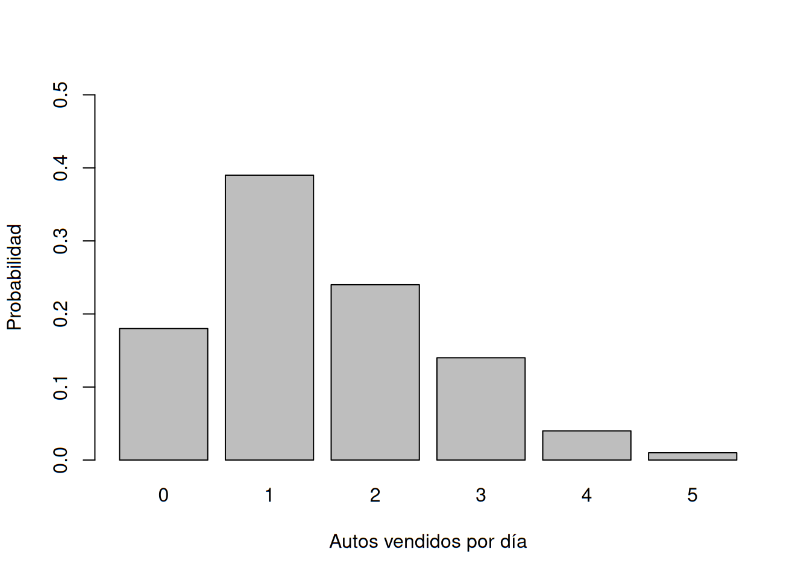
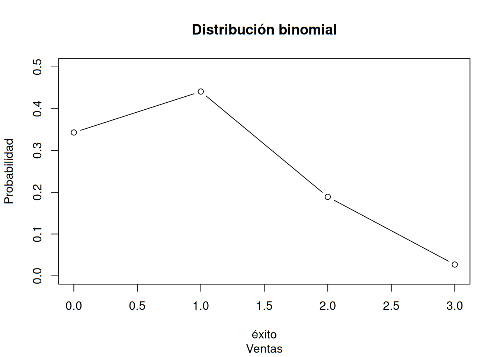

En esta unidad se abordarán los conceptos de variable discreta aleatoria y distribuciones de probabilidad discretas, en este caso, tres: distribución binomial, de Poisson e hipergeométrica.
Una variable aleatoria proporciona un medio para describir los resultados experimentales empleando valores numéricos. Las variables aleatorias deben tomar valores numéricos. En efecto, una variable aleatoria asocia un valor numérico a cada uno de los resultados experimentales. El valor numérico de la variable aleatoria depende del resultado del experimento. Puede ser discreta o continua, depende del tipo de valores numéricos que asuma.
Es toda variable aleatoria cuyo valor pertenece a un conjunto finito de valores enteros, e incluso infinito de dichos valores. No puede asumir valores que contengan decimales. Un buen ejemplo sería el número de estudiantes en el salón de clases o la cantidad de coches aparcados en el estacionamiento. No tiene sentido hablar de medio coche o tres cuartas partes de estudiante.
Describen cómo se distribuyen las probabilidades entre los valores de la variable aleatoria discreta \(x\), la distribución de probabilidad está definida por una función de probabilidad, denotada por \(f(x)\). La función de probabilidad da la probabilidad de cada valor de la variable aleatoria.
Como ejemplo de una variable aleatoria discreta y de su distribución de probabilidad, considere las ventas de automóviles en una agencia automotriz. Durante los últimos 300 días de operación, los datos de ventas muestran que hubo 54 días en los que no se vendió ningún automóvil, 117 días en los que se vendió 1 automóvil, 72 días en los que se vendieron 2 automóviles, 42 días en los que se vendieron 3, 12 días en los que se vendieron 4 y 3 días en los que se vendieron 5. Suponga que considera el experimento de seleccionar un día de operación y se define la variable aleatoria de interés como \(x=\) número de automóviles vendidos en un día. En cuanto a la notación de funciones de probabilidad, ésta se escribe como \(f(x)\). Así, siguiendo lo ya aprendido sobre frecuencias relativas, \(f(0)=54/300=0.18\). Esto último implica que la probabilidad de vender cero automóviles al día es del 0.18. Continuando con los demás valores, podemos obtener las demás probabilidades \(f(1)\), \(f(2)\), \(f(3)\), \(f(4)\) y \(f(5)\).
ventas.coches <- read.table("datasets/026-ventas_coches.txt", header = T)
ventas.coches.df <- as.data.frame(ventas.coches)
ventas.coches.df## x f.x
## 1 0 0.18
## 2 1 0.39
## 3 2 0.24
## 4 3 0.14
## 5 4 0.04
## 6 5 0.01Comprobemos que la sumatoria de las probabilidades es igual a 1:
| \(x\) | \(f(x)\) |
|---|---|
| 0 | 0.18 |
| 1 | 0.39 |
| 2 | 0.24 |
| 3 | 0.14 |
| 4 | 0.04 |
| 5 | 0.01 |
| - | Total=1.00 |
Contando con las probabilidades calculadas, es sencillo dar respuesta a ciertas preguntas que permitirían un mejor conocimiento del comportamiento de las ventas de coches. Por ejemplo, ¿cuántos coches es más probable vender por día? ¿qué tan probable es vender a lo mucho dos coches al día? ¿cuál es la probabilidad de vender tres autos o más por día? ¿y de vender al menos dos autos?
Recordemos que al elaborar distribuciones de frecuencia, debe satisfacerse lo siguiente:
\[ f(x)\geq 0\\ \sum f(x)=1 \]
Podemos representar la distribución por medio de una gráfica de barras, con algunos parámetros adicionales:
barplot(ventas.coches$f.x, names.arg = ventas.coches$x,
xlab = "Autos vendidos por día", ylab = "Probabilidad",
ylim = c(0,0.5))
El ejemplo más sencillo de una distribución de probabilidad discreta dada mediante una fórmula es la distribución de probabilidad uniforme discreta. Su función de probabilidad está definida por la ecuación:
\[ f(x)=\frac{1}{n} \]
Donde: \(n=\) número de valores que puede tomar la variable aleatoria. El caso típico es el lanzamiento de un dado.
Es una medida de la localización central de la variable aleatoria. Se define como:
\[ E(x)=\mu=\sum xf(x) \]
Para el caso de las ventas de coches, tomamos la columna \(x\) y a multiplicamos por la columna \(f(x)\). Obtendremos la columna \(xf(x)\):
ventas.coches.ve <- ventas.coches$x*ventas.coches$f.x
ventas.coches.df$xf.x <- ventas.coches.ve
ventas.coches.df## x f.x xf.x
## 1 0 0.18 0.00
## 2 1 0.39 0.39
## 3 2 0.24 0.48
## 4 3 0.14 0.42
## 5 4 0.04 0.16
## 6 5 0.01 0.05Calculamos la sumatoria de la tercera columna:
sum(ventas.coches.df$xf.x)## [1] 1.5De aquí se desprende que el valor esperado para este caso es \(E(x)=1.50\). Esto implica que cabría esperar la venta de 1.50 automóviles diarios. Esto permite realizar el pronóstico de ventas promedio por semana de \(5(1.50)=7.5\) o promedio por mes de \(30(1.50)=45\).
Así como antes se utilizó la varianza como medida de dispersión, en cuanto a distribuciones de probabilidad es útil para expresar la variabilidad de los valores de la variable aleatoria. La fórmula para expresarla sería:
\[ Var(x)=\sigma ^2=\sum (x-\mu)^2f(x) \]
A continuación mostramos la tabla de cálculos de la varianza:
ventas.coches$R <- ventas.coches$x-1.50
ventas.coches$R2 <- ventas.coches$R^2
ventas.coches$R2f.x <- ventas.coches$R2*ventas.coches$f.x
ventas.coches## x f.x R R2 R2f.x
## 1 0 0.18 -1.5 2.25 0.4050
## 2 1 0.39 -0.5 0.25 0.0975
## 3 2 0.24 0.5 0.25 0.0600
## 4 3 0.14 1.5 2.25 0.3150
## 5 4 0.04 2.5 6.25 0.2500
## 6 5 0.01 3.5 12.25 0.1225Ahora calculamos la varianza obteniendo la sumatoria de la última columna:
sum(ventas.coches$R2f.x)## [1] 1.25Y para terminar, calculamos la desviación estándar a partir de la varianza:
sqrt(1.25)## [1] 1.118034La distribución de probabilidad binomial es una distribución de probabilidad que tiene muchas aplicaciones. Está relacionada con un experimento de pasos múltiples al que se le llama experimento binomial.
Tiene las siguientes propiedades:
El experimento consiste en una serie de \(n\) ensayos idénticos.
En cada ensayo hay dos resultados posibles. A uno de estos resultados se le llama éxito y al otro se le llama fracaso.
La probabilidad de éxito, que se denota \(p\), no cambia de un ensayo a otro. Por ende, la probabilidad de fracaso, que se denota \(1 - p\), tampoco cambia de un ensayo a otro.
Los ensayos son independientes.
Considere el ejemplo siguiente. De acuerdo con la experiencia, el gerente de una tienda de ropa estima que la probabilidad de que un cliente realice una compra es 0.30. ¿Cuál es la probabilidad de que dos de los próximos tres clientes realicen una compra?
La función de la probabilidad binomial es:
\[ f(x)=\left(\begin{array}{c}n\\ x \end{array} \right)p^x(1-p)^{n-x} \] Donde: \(f(x)=\) probabilidad de \(x\) éxitos en \(n\) ensayos \(n=\) número de ensayos \(p=\) probabilidad de un éxito en cualquiera de los ensayos \(1-p=\) probabilidad de un fracaso en cualquiera de los ensayos
Recordemos además que:
\[ \left(\begin{array}{c}n\\ x \end{array} \right)=\frac{n!}{x!(n-x)!} \]
Para nuestro caso, la probabilidad de que ningún cliente compre se calcula mediante:
\[ f(0)=\frac{3!}{0!(3-0)!}(0.30)^0(1-0.30)^{3-0}\\ f(0)=\frac{6}{1(6)}(1)(0.70)^3\\ f(0)=(1)(0.343)=0.3430 \]
Podemos calcular los posibles resultados en R con el siguiente comando. Primero se escribe los éxitos esperados, luego el tamaño del experimento (intentos) y al final la probabilidad de éxito:
db0 <- dbinom(0, 3, 0.30)
db1 <- dbinom(1, 3, 0.30)
db2 <- dbinom(2, 3, 0.30)
db3 <- dbinom(3, 3, 0.30)
db0## [1] 0.343db1## [1] 0.441db2## [1] 0.189db3## [1] 0.027Comprobemos que la suma de todas estas probabilidades es igual a 1:
db0+db1+db2+db3## [1] 1Lo anterior también pudimos hacerlo con:
sum(dbinom(c(0,1,2,3), 3, 0.30))## [1] 1E incluso existe un tercer método:
pbinom(3, 3, 0.30)## [1] 1k <- seq(0,3,by=1)
plot(k, dbinom(c(0,1,2,3),3,0.30), type = "b", main = "Distribución binomial", sub = "Ventas", xlab = "éxito", ylab = "Probabilidad", ylim = c(0,0.5))
\[ E(x)=\mu=np\\ Var(x)=\sigma^2=np(1-p) \]
Los experimentos de Poisson deben cumplir con:
La función de probabilidad de Poisson se define por:
\[ f(x)=\frac{\mu^xe^{-\mu}}{x!} \]
Donde: \(f(x)=\) probabilidad de \(x\) ocurrencias en un intervalo \(\mu=\) valor esperado o número medio de ocurrencias en un intervalo \(e=2.71828\)
Antes de considerar un ejemplo para ver cómo se usa la distribución de Poisson, observemos que el número de ocurrencias \(x\), no tiene límite superior. Ésta es una variable aleatoria discreta que toma los valores de una sucesión infinita de números \((x= 0, 1, 2, . . . )\).
Supongamos que deseamos saber el número de llegadas, en un lapso de 15 minutos, a la rampa del cajero automático de un banco. Si se puede suponer que la probabilidad de llegada de los automóviles es la misma en cualesquiera dos lapsos de la misma duración y si la llegada o no–llegada de un automóvil en cualquier lapso es independiente de la llegada o no–llegada de un automóvil en cualquier otro lapso, se puede aplicar la función de probabilidad de Poisson. Dichas condiciones se satisfacen y en un análisis de datos pasados encuentra que el número promedio de automóviles que llegan en un lapso de 15 minutos es 10.
Aquí la variable aleatoria es \(x=\) número de automóviles que llegan en un lapso de 15 minutos. Si la administración desea saber la probabilidad de que lleguen exactamente cinco automóviles en 15 minutos, \(x=5\), y se obtiene:
\[ f(5)=\frac{10^5e^{-10}}{5!}= 0.0378 \]
Lo calculamos en R así:
dpois(5, 10)## [1] 0.03783327Nos interesa la ocurrencia de una avería importante en una autopista un mes después de que ha sido repavimentada. Supongamos que la probabilidad de que haya una avería es la misma en cualesquiera dos tramos, de una misma longitud, de la autopista y que la ocurrencia o no–ocurrencia de una avería en un tramo es independiente de la ocurrencia o no-ocurrencia de una avería en cualquier otro tramo.
También sabemos que el promedio de averías importantes, un mes después de la repavimentación, son dos averías por kilómetro. Desea determinar la probabilidad de que no haya ninguna avería en un determinado tramo de tres kilómetros de autopista. Como lo que interesa es un intervalo cuya longitud es de tres kilómetros, \(μ=(2 averías/milla)(3 kilómetros)=6\) representa el número esperado de averías importantes en un tramo de tres kilómetros de autopista.
La probabilidad de que no haya ninguna avería importante es \(f(0)=6^0e^{-6}/0!=0.0025\). Por tanto, es poco probable que no haya ninguna avería importante en este tramo de tres kilómetros. En efecto, este ejemplo indica que hay una probabilidad de \(1-0.0025=0.9975\) de que haya por lo menos una avería importante en este tramo de tres kilómetros de autopista.
La distribución de probabilidad hipergeométrica está estrechamente relacionada con la distribución binomial. Pero difieren en dos puntos: en la distribución hipergeométrica los ensayos no son independientes y la probabilidad de éxito varía de ensayo a ensayo.
En la notación usual en la distribución hipergeométrica, \(r\) denota el número de elementos considerados como éxitos que hay en una población de tamaño \(N\), y \(N - r\) denota el número de elementos considerados como fracasos que hay en dicha población. La función de probabilidad hipergeométrica se usa para calcular la probabilidad de que en una muestra aleatoria de \(n\) elementos, seleccionados sin reemplazo, se tengan \(x\) éxitos y \(n- x\) fracasos. Para que se presente este resultado, debe tener \(x\) éxitos de los \(r\) éxitos que hay en la población y \(n-x\) fracasos de los \(N-r\) fracasos. La siguiente función de probabilidad hipergeométrica proporciona \(f(x)\), la probabilidad de tener \(x\) éxitos en una muestra de tamaño \(n\).
\[ f(x)=\frac{\left(\begin{array}{c}r\\ x \end{array} \right)\left(\begin{array}{c}N-r\\ n-x \end{array} \right)}{\left(\begin{array}{c}N\\ n \end{array} \right)} \ para\ 0\leq x \leq r \]
donde: \(f(x) =\) probabilidad de \(x\) éxitos en \(n\) ensayos \(n=\) número de ensayos \(N=\)número de elementos en la población \(r=\) número de elementos en la población considerados como éxitos
Para ilustrar los cálculos que se emplean al usar esta expresión, consideremos la siguiente aplicación al control de calidad. Una empresa fabrica fusibles que empaca en cajas de 12 unidades cada una. Asumiremos que un inspector selecciona al azar tres de los 12 fusibles de una caja para inspeccionarlos. Si la caja contiene exactamente cinco fusibles defectuosos, ¿cuál es la probabilidad de que el inspector encuentre que uno de los tres fusibles está defectuoso? En esta aplicación \(n=3\) y \(N=12\). Si \(r=5\) fusibles defectuosos en la caja, la probabilidad de hallar \(x=1\) defectuoso es
\[ f(1)=\frac{\left(\begin{array}{c}5\\ 1 \end{array} \right)\left(\begin{array}{c}7\\ 2 \end{array} \right)}{\left(\begin{array}{c}12\\ 3 \end{array} \right)}=\frac{\left(\begin{array}{c}5!\\ 1!4! \end{array} \right)\left(\begin{array}{c}7!\\ 2!5! \end{array} \right)}{\left(\begin{array}{c}12!\\ 3!9! \end{array} \right)}=\frac{(5)(21)}{220}=0.4773 \]
\[ E(x)=\mu=n \left(\begin{array}{c}r\\ N \end{array} \right)\\ Var(x)=\sigma^2=n \left(\begin{array}{c}r\\ N \end{array} \right) \left(1- \begin{array}{c}r\\ N \end{array} \right) \left(\begin{array}{c}N-n\\ N-1 \end{array} \right) \]